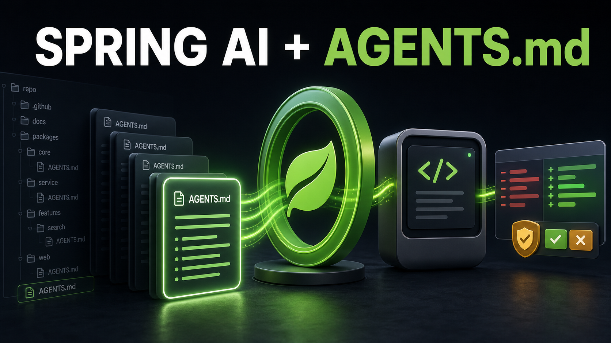

I have been having a lot of fun building spring-ai-agents-md.
Let me back up.
I had two motivations for creating this starter.
First, I am an AAIF Ambassador. I needed to do some Ambassador’ing. I wanted to make a public contribution that tied directly to an AAIF project and helped developers understand it, try it, and build something useful with it. AGENTS.md was the obvious choice for me.
Second, I am building agents with Spring AI. I want to be able to build my own “Claude” or “Codex” with Spring AI, and I am getting closer all the time.
I work with the popular coding agents. I am also building my own agents and agent harnesses. I do not want a completely different instruction format for each one. AGENTS.md is a simple, open specification that works across those worlds. The same repository instructions can help the agents people already use and the agents I am creating with Spring AI.
I really like that.
The idea seemed simple enough.
AGENTS.md gives coding agents a predictable place to find the instructions for a repository. Spring AI gives Java developers a consistent way to build AI applications. I wanted to bring the two together.
Put an AGENTS.md file in a Spring project. Add a starter. Build a normal Spring AI ChatClient. Let the agent get the right repository instructions automatically.
Easy, right?
Well, mostly.
Phase 1: Make the simple thing simple Link to heading
The first goal was a Spring Boot starter that loads an AGENTS.md document and adds it to Spring AI requests through a CallAdvisor.
I did not want to invent a schema. An AGENTS.md file is Markdown. People should be able to organize it in whatever way works for their project. The library preserves the complete document, including headings, lists, tables, code blocks, whitespace, and line endings.
The starter handles the wiring. This is the dependency:
<dependency>
<groupId>io.github.spring-ai-community</groupId>
<artifactId>spring-ai-starter-agents-md</artifactId>
<version>0.0.1-SNAPSHOT</version>
</dependency>
Then you build the ChatClient like you normally would.
@Bean
ChatClient chatClient(ChatClient.Builder builder) {
return builder.build();
}
The auto-configuration attaches the advisor to the auto-configured builder. There is no special advisor registration required in the application.
That part felt really good. It was the Spring experience I wanted.
Precedence was the hard part Link to heading
Loading one file was not the biggest struggle. Precedence was.
What happens when a repository has more than one AGENTS.md file?
Which instructions apply to a file deep inside a project? Does the closest document replace the root document, or do the instructions accumulate? What happens when two documents disagree? What happens after a filesystem tool moves the agent into another part of the repository?
I did not want the answers to be whatever felt right to me that day.
Luckily, the proposed AGENTS.md v1.1 clarification arrived at the right time. It put names around the behavior I needed: jurisdiction, accumulation, precedence, and implicit inheritance.
The rules are intuitive once they are written down:
- An
AGENTS.mdfile applies to its directory and everything below it. - Applicable guidance accumulates from ancestor directories.
- The closest instructions take precedence when guidance conflicts.
- Explicit user instructions override file-based instructions.
- Instructions from sibling directories do not apply.
The proposal is still a proposal, and the library says that clearly. But it gave me a solid target to implement and test instead of leaving the most important behavior implicit.
For a target file, spring-ai-agents-md walks toward the repository root, collects the applicable documents, and supplies them broadest first. Each complete document is kept intact inside a small framework-owned context envelope that explains the precedence.
repository/AGENTS.md
|
v
repository/examples/AGENTS.md
|
v
repository/examples/steward/AGENTS.md
|
v
repository/examples/steward/src/RepositoryTools.java
That final file gets the accumulated guidance, with the closest applicable instructions winning when there is a conflict.
When an application already knows the target, it can be explicit:
chatClient.prompt()
.advisors(AgentsMdAdvisorParams.target(
Path.of("src/main/java/com/example/Example.java")))
.user(request)
.call();
Filesystem tools can also propagate the path they accessed. The advisor resolves the instructions again on the next pass through the tool loop. That is the part that made the final example possible.
I wanted to be able to see what was happening Link to heading
I really wanted observability in this project.
When an agent gives a surprising answer, I need to be able to debug it. Did the advisor find an AGENTS.md file? Did it find one document or several? Did discovery stop at a safety limit? How much context did I add to the prompt?
Without that feedback, every problem starts to look like a model problem.
At the same time, an AGENTS.md file can contain repository details that do not belong in logs, metric tags, or exception messages. I wanted useful visibility without copying the instructions into another system.
The starter uses Spring Boot’s normal logging configuration. At DEBUG, it reports the selected resource location and character count. It never writes the contents of AGENTS.md to the logs.
When an ObservationRegistry is available, the advisor emits a focused Micrometer observation around the local prompt augmentation step:
spring.ai.agents.md.advisor
document.state = present | empty
document.count = zero | one | multiple
resolution.outcome = complete | depth-limit | document-limit | size-limit
The observation does not wrap the model call or duplicate the observations that Spring AI already provides. A separate spring.ai.agents.md.context.size distribution summary records how many characters were added to the system prompt. The tags stay low-cardinality. Document contents and resource paths are never used as tags.
I also wanted sane defaults. A repository should not be able to add an unlimited number of files, or an unlimited amount of text, to every model request.
| Limit | Default |
|---|---|
| Directories inspected | 32 |
| Documents composed | 16 |
| Size of one document | 64KB |
| Total composed context | 256KB |
Those limits are configurable. Invalid values fail during configuration instead of surprising you later. An oversized document is skipped whole, never silently truncated. When the total-size or document-count limit is reached, composition stops while keeping the accepted documents in broadest-to-closest order.
Most importantly, the application gets feedback when that happens. The advisor publishes an AgentsMdLimitReachedEvent with the normalized target, the limit that was reached, the number of documents accepted, the context size, and the configured limit. It does not contain the document contents.
An interactive application can turn that event into immediate, useful feedback:
@EventListener
void warnAboutAgentsMdLimit(AgentsMdLimitReachedEvent event) {
System.err.printf(
"AGENTS.md %s reached for %s; %d documents were applied.%n",
event.outcome(), event.target(), event.acceptedDocumentCount());
}
That distinction matters to me. A safety limit should not quietly change what the model knows. If a limit changes the context, I want to know about it. I want enough information to fix the configuration or the repository without exposing the instructions I was trying to protect.
Phase 2: Prove it with a coding agent Link to heading
For Phase 2, I wanted something more convincing than a unit test and a chat endpoint.
I built the Repository Steward, an interactive coding agent built with Spring AI and Spring Shell 4.0.3.
The steward can list, search, and read files inside a bounded repository workspace. As it moves through the repository, its filesystem tools propagate the active path. The AgentsMdSystemAdvisor refreshes the applicable instructions for that path.
The architecture looks like this:
Spring Shell `steward` command
|
v
Spring AI ChatClient + tool loop
|
+--> AgentsMdSystemAdvisor
| refreshes instructions for the active path
|
+--> listFiles / searchFiles / readFile
|
+--> proposePatch --> pending ChangeProposal
|
show-change / apply-change
|
v
atomic filesystem write
The model can explore the repository and propose a patch. It cannot approve its own change. apply-change is a Spring Shell command, not a model tool. A person has to review the proposal and run the command.
The safety boundaries are implemented in Java, not trusted to the prompt.
- Paths must remain inside the configured workspace.
- Absolute paths and
..escapes are rejected. - Symbolic links and protected directories such as
.gitandtargetare rejected. - Reads, searches, file sizes, depth, and result counts are bounded.
- A patch must replace one exact, unique piece of text.
- Each proposal stores a digest of the file that was reviewed.
- The digest is checked again immediately before the atomic write.
If the file changed after the proposal was reviewed, the proposal is stale and the write is refused.
That is one of my favorite parts of the demo.
Was the final example necessary? Link to heading
Yes.
Was it too much?
Maybe.
The Repository Steward turned a focused Spring Boot starter into a real CLI coding agent, with filesystem containment, proposal storage, diffs, atomic writes, stale-change protection, Spring Shell commands, JLine, and a lot more tests.
It also forced the model to do something that sounds simple but is not. The model has to inspect a file, preserve exact text across multiple calls, invoke a structured tool with the right arguments, process the result, and return to the conversation.
I tried a lot of models.
Some stopped after reading the file. Some printed JSON that looked like a tool call instead of calling the tool. Some invented a proposal ID. One changed the registered readFile tool name to read, which Spring AI correctly rejected. A model advertising tool support does not mean it is good at multi-step structured tool calling.
At first, I wondered if my laptop was the problem. So I ran the same workflow against larger hardware and more models. The hardware helped with speed. It did not turn every model into a reliable coding agent.
That was humbling, but useful.
The example might be more than the starter needed. It is also the best proof that the starter works. It shows AGENTS.md instructions changing as an agent moves through a repository. It shows Spring AI driving a recursive tool loop. It shows the difference between instructions for a model and safety boundaries enforced by an application.
It also made one requirement very clear: use a model that is good at multi-step structured tool calling.
Watch the Repository Steward Link to heading

The video is less than one minute. It shows the steward:
- Confirming its bounded workspace.
- Discovering the
AGENTS.mdfiles that apply to a nested Java file. - Inspecting the implementation before answering a question.
- Creating a pending patch without changing the file.
- Showing the proposed diff.
- Applying it only after explicit approval.
That is the story I wanted the example to tell.
Why I think this matters Link to heading
I am building my own agents and agent harnesses with Spring AI. I am not sure how many other people are doing the same thing yet.
I do know that I want the instructions for those agents to live with the code. I want the format to be open. I want nested projects to provide focused context without copying everything from the repository root. I want the behavior to be easy to explain. I want the Spring integration to feel like Spring.
spring-ai-agents-md is small, but I think it is really valuable.
This has been really fun. I am really excited about this project. The tests are green, the repository is public, the example is documented, and the demo is recorded.
Now that the blog is done, let’s see if I can get this pulled into spring-ai-community.
I have put a lot of work into it. I am ready for feedback, but I am still nervous.
That probably means it is time to share it.